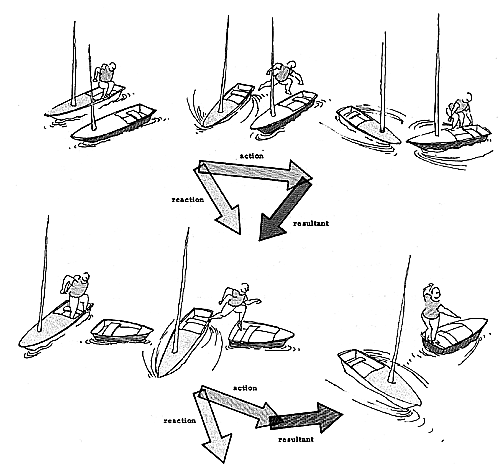

Fig. 511.20 One Energy Event: Action, Reaction, and Resultant: One energy as demonstrated by the man jumping from the boat. His action demonstrates the action, reaction, and resultant of the open-ended triangular spiral.
Copyright © 1997 Estate of R. Buckminster Fuller